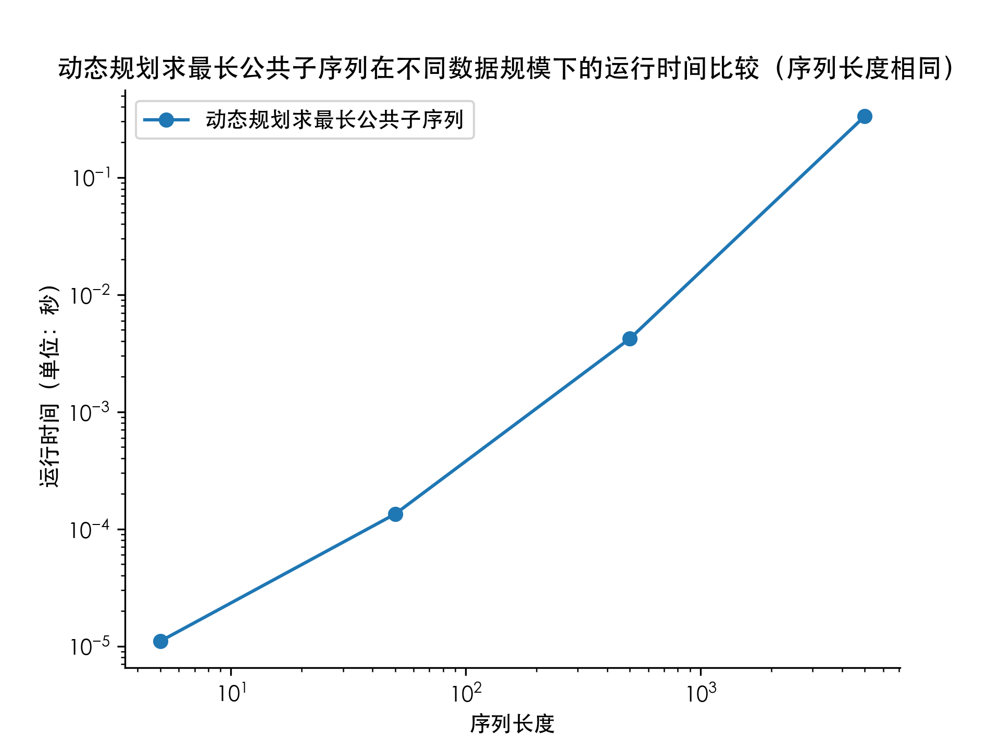
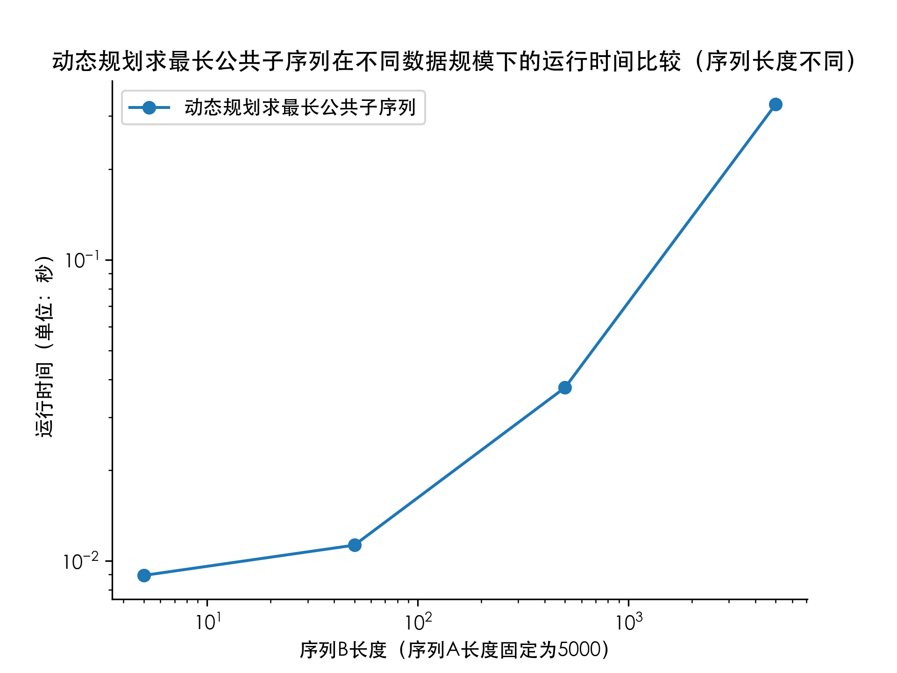

内容与设计思想
编写随机整数生成算法，生成0到9范围内的N个随机整数并输出；
编写计算最长公共子序列方法的代码；
随机生成两组范围为0到9的5、50、500、5000个随机整数，并求两组整数的最长公共子序列
随机生成一组范围为0到9的5000个随机整数和另一组范围为0到9的5、50、500、5000个随机整数，并求两组整数的最长公共子序列
实现代码
随机数生成器
1
2
3
4
5
6
7
8
9
10
11
12
13
14
15
16
17
| #include <iostream>
#include <fstream>
#include <cstdlib>
#include <ctime>
using namespace std;
int main() {
ofstream fout1("data1.txt");
ofstream fout2("data2.txt");
srand(time(0));
int n1, n2;
cin>>n1>>n2;
for(int i = 0; i < n1; i++) fout1<<rand() % 10<<" ";
for(int i = 0; i < n2; i++) fout2<<rand() % 10<<" ";
fout1.close();
fout2.close();
return 0;
}
|
最长公共子序列
1
2
3
4
5
6
7
8
9
10
11
12
13
14
15
16
17
18
19
20
21
22
23
24
25
26
27
28
29
30
31
32
33
34
35
36
37
38
39
40
41
42
43
44
45
46
47
48
49
50
51
52
53
54
55
56
57
58
59
60
61
62
63
64
65
| #include <iostream>
#include <fstream>
#include <cstdlib>
using namespace std;
int d[5005][5005];
int main(){
ifstream fin1("data1.txt");
ifstream fin2("data2.txt");
clock_t start, stop;
int a[5005], b[5005], r[5005], n1 = 0, n2 = 0, p, q, cnt;
cout<<"原始序列1: ";
while (!fin1.eof()){
fin1>>a[n1 + 1];
n1++;
}
for(int i = 1; i <= n1 - 1; i++) cout<<a[i]<<" ";
cout<<endl;
cout<<"原始序列2: ";
while(!fin2.eof()){
fin2>>b[n2 + 1];
n2++;
}
for(int i = 1; i <= n2 - 1; i++) cout<<b[i]<<" ";
cout<<endl;
n1--;
n2--;
start = clock();
for(int i = 0; i <= n1; i++)
for(int j = 0; j <= n2; j++){
if(i == 0 || j == 0) d[i][j] = 0;
else{
if(a[i] == b[j]) d[i][j] = d[i - 1][j - 1] + 1;
else d[i][j] = max(d[i][j - 1], d[i - 1][j]);
}
}
p = n1;
q = n2;
cnt = d[n1][n2] - 1;
while (p > 0 && q > 0){
if(d[p][q] == (d[p - 1][q - 1] + 1) && a[p] == b[q]){
r[cnt] = a[p];
cnt--;
p = p - 1;
q = q - 1;
continue;
}
if(d[p][q-1] == d[p - 1][q]){
q = q - 1;
}
else if(d[p][q] == d[p][q - 1]){
q = q - 1;
}
else{
p = p - 1;
}
}
stop = clock();
cout<<"最长公共子序列: ";
for(int i = 0; i < d[n1][n2]; i++) cout<<r[i]<<" ";
cout<<endl;
cout<<"Total time: "<<(double)(stop - start) / CLOCKS_PER_SEC<<endl;
fin1.close();
fin2.close();
return 0;
}
|
运行效率
时间记录使用了C++自带的clock()函数，通过在程序开头和结尾分别调用clock()函数并将两值相减，即可得到程序运行时间。结果如下：
1
2
总结
使用动态规划算法求两个长度分别为 \[m\] 和 \[n\] 的序列的公共子序列的时间复杂度为 \[\Theta(mn)\]，回溯打印公共子序列串的时间复杂度为 \[\Theta(m+n)\]，故总的时间复杂度为 \[\Theta(mn)\]。在实验中，当 \[m=n\] 时，算法的时间复杂度始终为 \[\Theta(n^2)\]，故在对数坐标下运行时间呈线性变化。而当 \[m\] 从远小于 \[n\] 逐渐增大到 \[n\] 时，算法的时间复杂度从 \[\Theta(n)\] 逐渐变化为 \[\Theta(n^2)\]，故在对数坐标下运行时间曲线的斜率逐渐增大。综上所述，实验结果与理论基本吻合。